Manipulating expressions
The examples below are entered in "maple input" format (the only kind available before version 10 of Maple). You may prefer the "2D math" input format, which is turned on by default in Maple 10. You can change between them by choosing Tools/Options.../Display tab/Input display. You can also mix and match within the same document. I will use the older 1D format.
You can use a pretty natural syntax to enter expressions as you would in a calculator. The symbol * is for multiplication and ^ raises to a power.
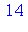
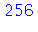
In the 1D input mode, every command must end with a semicolon or a colon. The colon prevents Maple from showing the result of the command, which is often useful to prevent annoyingly and uselessly long output.
Any symbol or name that Maple does not have a special meaning for is considered a variable.
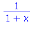

| > |
sin(theta)^2 + cos(theta)^2; |

Notice how the equation above is not given the obvious simplification. Maple knows how to do it, but you have to ask.

The "ditto" mark % always refers to the most recently output result.
Maple recognizes π. You must refer to it as Pi.
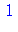
Maple thinks of all numbers as being exactly themselves, so Pi is just π, with an infinite nonrepeating decimal expansion. If you want to get a standard calculator-type approximation, use evalf (the f stands for "floating point").
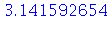
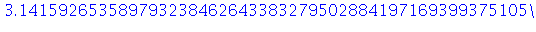
Remember, evalf can be applied to any expression with exact numbers in it.
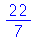
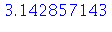
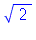

Assignments and evaluation
Expressions can be assigned to names for later use. The assignment operator is :=.
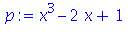
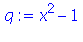
You must remember the colon. Without it, Maple still reads a legal expression, but the assignment is not done and your results will not be what you expect.
Once expressions are assigned to names, the name can be used as a substitute for the expression.
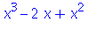
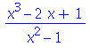
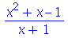
Observe how simplify was able to find and cancel out a common root. This is not always the case, though.
Once a name is assigned a value, that value is applied globally, even retroactively.
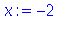

Usually this creates confusion and does not do what you want. You can undo an assignment by saying
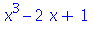
In practice it's usually better to give a variable a specific value in an expression by using eval, which does not make the assignment globally.
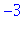
Simplification and manipulation
The simplify command is an all-purpose simplifier. Sometimes, you want something more specific.
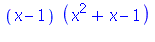
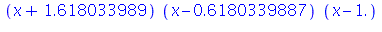
| > |
collect( x^3 + x^2*y + x^2*y^2 + x*y + y, x); |
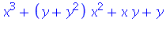
| > |
collect( x^3 + x^2*y + x^2*y^2 + x*y + y, y); |

| > |
combine( sin(A)*cos(B) + cos(A)*sin(B) ); |
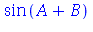
In many cases, expand is the opposite of all of these simplifications.
| > |
expand( (x-1)*(x^2+x-1) ); |

| > |
expand( x^3+(y+y^2)*x^2+x*y+y ); |
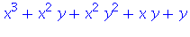
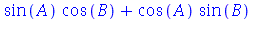
Sometimes, you might wonder why a simplification isn't what you expect.
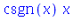
The problem is that Maple is not willing (well, usually) to make automatic assumptions that you might make. Tell Maple about them.
| > |
simplify( sqrt(x^2) ) assuming x > 0; |
| > |
sin(n*Pi) assuming n::integer; |
Worksheets and execution order
In a Maple worksheet (document), you can go back to visit and edit previous lines. If you press the Enter key on any line, that line and only that line will be re-executed. Hence the order in which commands appear in the worksheet may not be the same as the order in which they were executed. It can happen, for instance, that a worksheet that did the right thing yesterday no longer does the same thing when you open it today, because yesterday you executed lines out of order. Even worse, all open worksheets execute in the same logical space, so your results can depend on interactions between worksheets.
You can reset Maple to its initial state by executing the command restart. It's a good idea to put this at the top of every worksheet. You can also re-execute an open worksheet from the beginning, in order, by clicking the !!! button in Maple 10.